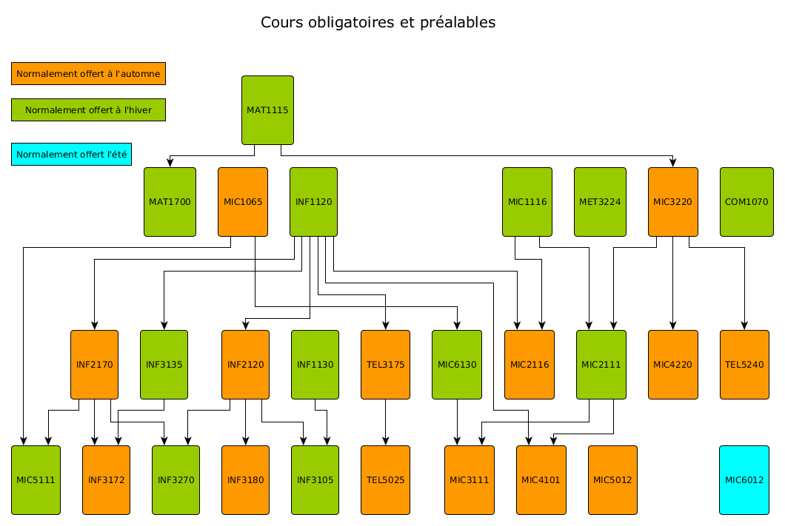

Bachelier ès sciences appliquées, B.Sc.A.
Ce programme comporte quatre-vingt-dix crédits.
Ce programme vise à doter l'étudiante, l'étudiant d'un solide ensemble de compétences théoriques et pratiques en informatique et en électronique, appuyées sur des bases en mathématiques et en physique, et complétées par une formation générale pertinente. La formation est orientée vers la conception et le développement de systèmes informatiques et électroniques combinant matériel et logiciel. On y approfondit notamment les technologies des microprocesseurs, microcontrôleurs, systèmes d'exploitation, langages de programmation et de spécification de bas niveau et spécialisés, capteurs, équipements de communication et de réseautage embarqués. En complément de cette formation technique, on y développe des compétences générales et relationnelles, notamment en gestion et en communication. La dimension pratique est présente tout au long de la formation, notamment par la réalisation d'activités d'intégration de type projet à chaque année d'études. Des cours au choix permettent à l’étudiant de compléter sa formation en l'orientant vers un domaine en plein essor, tel que les télécommunications et la mobilité, la sécurité informatique, le graphisme et les médias, l'internet et les objets intelligents et interactifs, les microsystèmes ou les systèmes embarqués.
En plus d'ouvrir la voie aux études de cycles supérieurs en sciences appliquées, le programme prépare l'étudiant au travail comme concepteur et développeur de systèmes électroniques et informatiques dans des centres de recherche, les entreprises de haute technologie ou du secteur manufacturier, les services publics et privés, les bureaux d'étude, etc.
Le programme n'est pas contingenté.
Tous les candidats doivent posséder une maîtrise du français attestée par l'une ou l'autre des épreuves suivantes: l'Épreuve uniforme de français exigée pour l'obtention du DEC, le test de français écrit du ministère de l'éducation ou le test de français écrit de l'UQAM. Sont exemptées de ce test les personnes détenant un grade d'une université francophone et celles ayant réussi le test de français d'une autre université québécoise.
Être titulaire d'un diplôme d'études collégiales (DEC) ou l'équivalent.
Voir Remarque pour toutes les bases d'admission.
Reconnaissance d’acquis: Les titulaires d'un diplôme d'études collégiales (DEC) en formation technique peuvent bénéficier de reconnaissances d'acquis (jusqu'à 15 crédits) sur recommandation de la direction du programme.
Posséder des connaissances appropriées, tel qu'établi lors d'une entrevue avec le directeur du programme, être âgé d'au moins 21 ans et avoir travaillé pendant au moins 2 ans dans le domaine.
Voir Remarque pour toutes les bases d'admission.
Au moment du dépôt de la demande d'admission, avoir réussi au moins cinq cours (15 crédits) de niveau universitaire.
Voir Remarque pour toutes les bases d'admission.
Être titulaire d'un diplôme obtenu à l'extérieur du Québec après au moins treize années de scolarité (1) ou l'équivalent.
Voir Remarque pour toutes les bases d'admission.
Avoir réussi les cours ou atteint les objectifs de formation spécifiques de niveau collégial en sciences de la nature dans les domaines suivants: Calcul intégral; Calcul différentiel; Algèbre linéaire et géométrie vectorielle; Électricité et magnétisme; Ondes et physique moderne.
Le candidat admissible pour lequel l'Université aura établi qu'il n'a pas atteint les objectifs de formation requis se verra imposer un ou plusieurs des cours d'appoint suivants:
MAT0341 - Calcul différentiel et intégral I (hors programme) (Calcul différentiel et Calcul intégral)
MAT0339 - Mathématiques générales (hors programme) (Algèbre linéaire et géométrie vectorielle)
PHG0340 - Ondes, électromagnétisme et physique moderne (hors programme) (Électricité et magnétisme)
Les cours d'appoint exigés devront être réussis au plus tard au cours de la première année d'inscription.
Certains programmes peuvent accorder des crédits universitaires pour une formation technique acquise au niveau collégial.
Consulter les reconnaissances d'acquis.
(Sauf indication contraire, les cours comportent 3 crédits. Certains cours ont des préalables. Consultez la description des cours pour les connaître.)
INF1120 Programmation I
INF2120 Programmation II
INF2170 Organisation des ordinateurs et assembleur
INF3105 Structures de données et algorithmes
INF3135 Construction et maintenance de logiciels
INF3172 Principes des systèmes d’exploitation
INF3180 Fichiers et bases de données
MAT1111 Calcul I ou MAT1115 Calcul I
INF1130 Mathématiques pour informaticien
MAT1700 Probabilités I
MIC1065 Circuits logiques
MIC1116 Électronique pratique (2 crédits)
MIC2111 Analyse de circuits (2 crédits)
MIC3220 Signaux et systèmes
MIC4101 Électronique analogique et numérique
MIC4220 Traitement numérique des signaux
MIC5111 Systèmes embarqués
MIC6130 Circuits intégrés programmables
INF3270 Téléinformatique
TEL3175 Interconnexions et communications
TEL5240 Systèmes de communication
TEL5025 Systèmes de télécommunications embarquées
MIC2116 Projet intégrateur 1 (1 crédit)
MIC3111 Projet intégrateur 2 (1 crédit)
ou
Trois cours pris dans les listes suivantes. Les trois cours peuvent provenir d’une ou plusieurs listes.
MIC5120 Microélectronique II
MIC6141 Circuits intégrés analogiques
MIC616X Sujets spéciaux en microélectronique
MIC6245 Circuits intégrés à très grande échelle
INF4230 Intelligence artificielle
INF5071 Infographie
INF5115 Introduction à la robotique mobile
MIC5130 Capteurs, senseurs et actionneurs
TEL5030 Internet des objets et protocoles
EMB7010 Construction de logiciel en environnement embarqué
EMB7015 Systèmes et langages spécialisés
EMB7020 Codesign
INF4170 Architecture des ordinateurs
INF4175 Réseaux multimédia et applications
INF4482 Développement d’applications réparties
INF5371 Interconnexion de réseaux
TEL4165 Réseaux sans fil et applications mobiles
EMB7025 Sûreté et sécurité des systèmes embarqués
INF4471 Introduction à la sécurité informatique
Ou tout autre cours choisi avec l'accord de la direction de programme
Un cours parmi les suivants (3 crédits):
ECO1081 Économie des technologies de l'information
MET1105 La gestion et les systèmes d'information
MET2100 Gestion des organisations: complexité, diversité et éthique
ORH1163 Comportement organisationnel
ORH1620 Administration des lois du travail
Un cours parmi les suivants (3 crédits):
Un cours d’anglais selon le niveau de classement de l’étudiant
FSM2001 L'être humain et son environnement
FSM4000 Sciences et société
PHI4340 Aspects humains de la science et de la technique
LIT1006 Écriture et norme grammaticale I
LIN1009 Apprentissage de la grammaire du français écrit I
SOC6210 Sociologie de la technologie
Note: L’UQAM ne s’engage pas à offrir à tous les trimestres tous les cours dans ces listes. Il est important de consulter le guide particulier d’inscription pour connaître les cours offerts à un trimestre donné.
Pour pouvoir être inscrit à l'activité MIC6012 Stage d'intégration, l'étudiant doit avoir complété ou être en voie de compléter au moins 75 crédits du programme avec une moyenne égale ou supérieure à 2,5 sur 4,3. Le stage se déroule normalement lors du dernier trimestre d'été du cheminement. L'étudiant doit avoir identifié le lieu du stage et complété son inscription à l'activité MIC6012 Stage d'intégration au cours du trimestre d'automne précédent le stage. L'étudiante, l'étudiant dont la moyenne est inférieure à 2,5 sur 4,3 s'inscrira au cours MIC5012 Projet intégrateur thématique au lieu du stage.
Un étudiant qui a complété ou est en voie de compléter au moins 60 crédits et dont la moyenne cumulative est égale ou supérieure à 3,5 sur 4,3 pourra demander à s'inscrire aux cours:
EMB7010 Construction de logiciel en environnement embarqué
EMB7015 Systèmes et langages spécialisés
EMB7020 Codesign
EMB7025 Sûreté et sécurité des systèmes embarqués
L'étudiant devra obtenir l'autorisation de la direction du programme ainsi que celle de la direction du programme de DESS en systèmes embarqués pour s'inscrire à ces crédits d'activités.
La formation est polyvalente et multidisciplinaire: l'étudiant acquiert des connaissances et des compétences en informatique, en électronique et en conception de systèmes.
L'enseignement se fait généralement en petits groupes de vingt à quarante étudiants, selon les cours, favorisant un encadrement personnalisé. La dimension pratique est présente tout au long du programme par des séances de travaux pratiques et des cours projet intégrateurs à chaque année.
L'UQAM donne accès à des équipements de laboratoire et à des logiciels de conception par ordinateur à la fine pointe de la technologie tels qu'utilisés dans l'industrie.
Le programme comporte un stage obligatoire.
Ce cours vise l'acquisition de connaissances indispensables à tout gestionnaire dans le cadre de son travail: la communication. À la fin de ce cours, l'étudiant sera capable d'utiliser différentes techniques de communication, d'animer des réunions et de prononcer des conférences, des exposés. Il sera également apte à appliquer des techniques de négociation, de prioriser l'information et finalement promouvoir l'image corporative dans ses relations publiques. - Les fondements de la communication - Les différentes composantes des habiletés de communication et l'analyse de l'information véhiculée - La préparation d'une communication en public - La présentation en public: les étapes, les comportements et les outils - Les techniques de communication et l'application aux techniques de négociation - Les différents styles de communication - Les différents types de réunions et leurs caractéristiques - La préparation, l'animation et l'évaluation d'une réunion - Les techniques d'animation
Introduction aux concepts de base de l'analyse microéconomique, macroéconomique et de l'économie de gestion, avec applications au marché des technologies de l'information. Offre, demande et équilibre du marché. Rendements, coûts de production, économies d'échelle et coûts irrécupérables. Structures de l'industrie: concurrence, oligopole, monopole. Alliances stratégiques. Croissance, productivité, emploi et commerce international. Bénéfices et amortissement économique. Éléments de mathématiques financières et valeur présente. Coûts du capital, taux de rendement et mesures de risque. Introduction aux études de marché et à l'évaluation de projets d'investissement, avec applications aux technologies de l'information.
Cours global sur l'être humain et son environnement à l'aide de l'approche systémique. Étude des principes des systèmes et de l'approche systémique. Utilisation de cette méthodologie pour la compréhension des grandes questions relatives à l'être humain et à son environnement. Application à un secteur particulier de l'environnement, au sein d'un travail de trimestre.
Rôle des sciences dans la société. Analyse des politiques scientifiques, de l'organisation des institutions scientifiques et de l'enseignement des sciences. Interaction entre les sciences et les structures sociales. Réflexion sur l'impact sociologique du développement des sciences et des innovations techniques qui en résultent: l'automation, la communication de masse, les maladies industrielles, les manipulations génétiques, l'énergie, la pollution, l'environnement, etc. Responsabilité du scientifique envers la société.
Ce cours vise à permettre aux étudiants d'acquérir les connaissances et les compétences qui permettent de faire le développement et l'intégration d'applications dans des environnements embarqués.
Processeurs (entrée/sortie, mode superviseur et déroutement); plateformes de traitement embarquées (bus processeur, mémoire, périphériques d'entrée/sortie, interfaces); structures et services des systèmes d'exploitation; construction de programme (patrons de conception, test); compilation; processus et multi-tâches, changement de contexte; politiques d'ordonnancement temps-réel; services d'un système d'exploitation temps-réel; mécanismes de communication entre processus; réseaux pour systèmes embarqués; études de cas dans un environnement de développement. Cours de 3 heures et un laboratoire de 2 heures / semaine.
Préalables académiques: MIC5111 Systèmes embarqués
Pouvoir concevoir, réaliser et mettre en oeuvre des applications ou des services pour les systèmes embarqués. Programmation réactive, programmation temps-réel, programmation synchrone, intergiciels, validation. Langages généralistes: C et Java; variations spécifiques: JavaCard, Java Temps Réel et langages synchrones: Esterel et Lustre. Cours de 3 heures et un laboratoire de 2 heures / semaine.
Préalables académiques: MIC5111 Systèmes embarqués
Maîtriser les méthodologies de conception et développement de systèmes mixtes matériel et logiciel. Base théorique sur la conception de systèmes constitués de sections matérielles et logicielles: spécifications, modélisation, partitionnement matériel et logiciel, analyse de performance et techniques d'estimation. Spécification, modélisation et vérification pour le co-design; langage et outils. Mappage, allocation des ressources et partitionnement des applications vers les architectures matérielles et logicielles: algorithmes et outils. Interfaces et mécanismes de communication des blocs matériels et logiciels: description et synthèse.Optimisation multi-critères. Exploration de l'espace de design. Estimation et analyse des performances. Analyse temporelle de l'exécution. Simulation système. Synthèse matérielle et génération de logiciel. Outils intégrés de conception de systèmes matériels et logiciels. Cours de 3 heures et un laboratoire de 2 heures / semaine.
Préalables académiques: MIC5111 Systèmes embarqués; MIC6130 Circuits intégrés programmables
Ce cours vise à sensibiliser les étudiants aux différents aspects de la sûreté de fonctionnement et de la sécurité des systèmes, et à développer chez eux les compétences nécessaires à la prise en charge de ces objectifs essentiels dans le contexte des systèmes embarqués. Problématique d'ensemble de la sécurité et de la sûreté de fonctionnement d'un système embarqué. Causes: fautes, défaillances, erreurs, attaques, ergonomie. Fiabilité de système, de matériel, de logiciel: MTTF, MTTR, MTBF. Critères de sûreté de fonctionnement: fiabilité, disponibilité, innocuité, maintenabilité, testabilité. Mécanismes de contrôle: tolérance aux fautes, suppression des fautes, conception pour la sûreté. Menaces, vulnérabilités, attaques, préjudice, contrôles. Objectifs de sécurité: confidentialité, authenticité, intégrité, disponibilité. Mécanismes sécuritaires: chiffrage symétrique et asymétrique, hachage, fonctions à sens unique. Protocoles sécuritaires: authentification, échange de clés, signature. Notion de confiance. Contrôle d'accès, inviolabilité. Matériel spécialisé: cartes à puces, boutons, attaques invasives. Cadres de normatifs en sécurité et en sûreté (frameworks). Responsabilité professionnelle: éthique et impacts. Vérification et tests. Cours de 3 heures et un laboratoire de 2 heures / semaine.
Préalables académiques: MIC5111 Systèmes embarqués
Acquérir une méthode de développement de solutions logicielles dans le cadre du paradigme orienté-objet: analyse du problème, conception simplifiée, codage et test d'une solution. Sensibiliser au développement de programmes de qualité: fiables, faciles à utiliser, à comprendre et à modifier. - Introduction à un environnement de développement logiciel. - Introduction aux algorithmes. - Éléments de programmation de base: vocabulaire, syntaxe et sémantique, constantes, variables, types simples et composés (tableaux à une et deux dimensions), conversions de type, affectation, opérateurs et expressions, instructions, structures de contrôle (séquence, sélection, itération), instructions simples d'entrées-sorties, fichier texte. - Introduction aux éléments de la programmation orientée-objet: classes, objets, méthodes et paramètres, variables de classe, d'instance et locale, portée et durée de vie des variables, constructeurs. - Notion d'encapsulation. - Introduction à l'utilisation de classes et de paquetages prédéfinis.
Approfondir les concepts de la programmation orientée-objet. Approfondir les concepts de mise au point et de test de composants logiciels. Identification et définition des classes d'une solution logicielle. Relations entre les classes: composition et héritage. Classes abstraites et polymorphisme. Introduction à la notation UML. Algorithmes récursifs simples. Structures de données classiques: piles, files, listes et arbres binaires de recherche. Techniques classiques de recherche (séquentielle et binaire) et de tri. Introduction à la programmation des interfaces graphiques (GUI). Gestion des événements et des exceptions. Conception de paquetages. Introduction aux outils automatisés de validation. Ce cours comporte une séance obligatoire de laboratoire (2 heures). Six de ces laboratoires seront évalués.
Préalables académiques: INF1120 Programmation I
Familiariser l'étudiant avec le fonctionnement de l'ordinateur. Découvrir l'ordinateur à partir des niveaux de l'assembleur, du langage machine et des circuits logiques. Classification des ordinateurs. Description de la machine en couches: circuits logiques, microprogrammation, langage machine, langage d'assemblage. Description des unités de l'ordinateur. Description d'un processeur et de la mémoire au niveau du langage machine. Description du processeur à partir des circuits logiques. Description du processeur à partir du langage d'assemblage. Ce cours comporte une séance de laboratoire obligatoire.
Préalables académiques: INF1120 Programmation I
Initier les étudiants à la programmation à l'aide d'un langage impératif et procédural. Familiariser les étudiants à la construction professionnelle de logiciels et à leur maintenance. - Notions de base de la programmation procédurale et impérative en langage C sous environnement Unix/Linux (définition et déclaration, portée et durée de vie, fichier d'interface, stuctures de contrôle, unités de programme et passage des paramètres, macros, compilation conditionnelle). - Décomposition en modules et caractéristiques facilitant les modifications (cohésion et couplage, encapsulation et dissimulation de l'information, décomposition fonctionnelle). - Style de programmation (conventions, documentation interne, gabarits). - Déboggage de programmes (erreurs typiques, traces, outils, par ex., gdb). - Assertions et conception par contrats. - Tests (unitaires, intégration, d'acceptation, boîte noire vs. boîte blanche, mesures de couverture, outils d'exécution automatique des tests, par exemple, xUnit, scripts). - Évaluation et amélioration des performances (profils d'exécution, améliorations asymptotiques vs. optimisations, outils). - Techniques et outils de base pour la gestion de la configuration (par exemple, make, cvs). - Introduction à la maintenance de logiciels (types de maintenance, techniques de base, par exemple, remodelage, automatisation des tests de régression).
Préalables académiques: INF1120 Programmation I
Maîtriser et appliquer les concepts fondamentaux des systèmes d'exploitation. Structure générale d'un système d'exploitation. Langage de programmation des systèmes d'exploitation: C. Processus séquentiels et parallèles, coopération, gestion des processus, communication entre processus. Exclusion mutuelle, échanges de messages, gestion des événements. Gestion des ressources: mémoire, processeurs, périphériques. Ordonnancement des tâches. Fiabilité du système de sécurité de l'information; méthodes de protection. Exemple d'un système contemporain: UNIX.
Préalables académiques: INF2170 Organisation des ordinateurs et assembleur; INF3135 Construction et maintenance de logiciels
Familiariser l'étudiant avec les structures de données utilisées dans les systèmes de gestion de bases de données. Introduire les concepts fondamentaux des bases de données en insistant sur le modèle relationnel. - Structures de données pour les bases de données - Représentation des enregistrements - Gestion de l'espace - Organisations de base: sériel, séquentiel, indexé, adressage dispersé - Complexité des différents modes d'accès - Structures inter-enregistrements: contiguïté physique, chaînage, indirection, groupage physique - Système de gestion de bases de données - Architecture hiérarchique ANSI/SPARC - Introduction aux principaux modèles de données - Systèmes relationnels: structures de données, contraintes de clé et d'intégrité référentielle, algèbre relationnelle, calcul des prédicats, SQL - Concept de transaction - Mécanismes de contrôle de concurrence - Mécanismes de récupération
Préalables académiques: NF2120 Programmation II
Introduire les notions de base en matière de télécommunication et de téléinformatique indispensables à l'étude des réseaux actuels et des réseaux de nouvelle génération. Terminologie et concepts de base des réseaux téléinformatiques. Les différentes couches du modèle OSI et exemples tirés du modèle TCP/IP. Normes et protocoles associés aux diverses couches du modèle OSI, de la couche physique à la couche application. Transmission de données, correction d'erreurs, codage, multiplexage, équipements d'interconnexion. Protocoles de liaison de données, de routage et de transport. Adressage IP. Applications sur Internet (HTTP, FTP, SNMP). Ce cours comporte une séance obligatoire de laboratoire (2 heures).
Préalables académiques: INF2120 Programmation II ou INF3135 Construction et maintenance de logiciels; INF2170 Organisation des ordinateurs et assembleur ou TEL1170 L'univers des télécommunications
Familiariser l'étudiant avec la structure des ordinateurs modernes. Initier au fonctionnement interne, à l'agencement des organes. Classification des architectures. Structure des ordinateurs parallèles, pipelines, matriciels et à multiprocesseurs. Fonctionnement d'un processeur. Unité de traitement: étude comparative des catégories d'instructions, unité de contrôle, U.A.L. Mémoires: architecture, fonctionnement, types. Entrée/sortie: adressage des composants, synchronisation, interfaces, canaux. Pipelining: principe, arithmétique et instructions, fonctionnement. Traitement vectorisé: caractéristiques et exemples. Multiprocesseurs: structures fonctionnelles, réseaux d'interconnexion, organisation de la mémoire parallèle, logiciels d'exploitation.
Préalables académiques: INF3172 Principes des systèmes d’exploitation
Étudier la transmission et l'échange de données multimédia et les exigences des applications multimédia dans les réseaux de télécommunications. Les spécificités et exigences des applications multimédia: mécanismes et techniques visant à assurer la qualité de service dans les réseaux en termes de bande passante, synchronisation, délai de transmission, etc., les architectures et protocoles utilisés (ex.: MPLS, GMPLS, Diff Serv, IntServ, SIP). Apllications multimédia et en temps réel (ex.: voix sur IP, téléconférences, télémédecine, enseignement à distance).
Préalables académiques: INF3270 Téléinformatique
Connaître les paradigmes de l'intelligence artificielle. Être capable de formuler des hypothèses pour la recherche, de les tester, les interpréter et les présenter. Être capable d'évaluer les idées reçues à propos de l'intelligence artificielle. Historique de l'intelligence artificielle. Identification descriptive et réduction de buts. Résolution de problèmes par analogie. Exploitation de contraintes naturelles. Propagation de contraintes. Recherche et exploration de solutions de rechange. Décision et contrôle. Paradigmes de résolution de problèmes. Logique mathématique et démonstration de théorèmes. Représentation des connaissances. Traitement des langues naturelles.
Préalables académiques: INF3105 Structures de données et algorithmes
Introduire les étudiants aux différents aspects de la sécurité des systèmes informatiques. Sensibiliser les étudiants aux risques et menaces. Introduire les techniques permettant d'assurer la sécurité des processus. Introduire les méthodes de mitigation du risque. À la fin de ce cours, l'étudiant devra être en mesure de:
distinguer les principaux objectifs de sécurité;
expliquer le fonctionnement et justifier l'utilisation des principaux mécanismes de sécurité: chiffrement, signature, hachage, protocoles, etc.;
identifier les risques et les menaces auxquels fait face un système;
proposer des mesure de contrôle appropriées.
Principes et concepts fondamentaux de la sécurité des systèmes informatiques. Principaux objectifs de sécurité: confidentialité, intégrité, disponibilité, authentification, non répudiation, contrôle d'accès. Typologie des attaques et menaces: fuites, modifications, dénis de service. Introduction aux mécanismes sécuritaires modernes: systèmes de chiffrage symétriques et asymétriques; fonctions de hachage; protocoles sécuritaires: authentification, contrôle d'accès. Sécurité des réseaux: filtrage, périmètre de sécurité, journalisation, surveillance et détection d'intrusion, appareils mobiles. Gestion des incidents de sécurité et améliorations des systèmes: mécanismes de recouvrement. Analyse de risque. Gestion des vulnérabilités techniques. Éducation des usagers. Considérations légales, politiques et éthiques. Politiques et modèles de sécurité. Services de commerces électronique. Monnaie électronique. Mécanismes de paiement. Cours de 3 heures et un laboratoire de 2 heures / semaine.
Préalables académiques: INF2120 Programmation II
Familiariser l'étudiant avec les concepts et les paradigmes de répartition des applications et des données sur Internet. Architectures client-serveur sur Internet. Les composantes architecturales et leur intégration. Distribution des logiques de présentation, d'affaires et de données. Méthodes d'interopérabilité des systèmes dans un environnement réparti. Interfaces applicatives (API) pour le déploiement des applications réparties. onctions du middleware. Bases de données distantes et réparties. Moniteurs de transactions. Environnements et systèmes d'exploitation répartis (DCE, Corba, .NET). Exemples d'applications réparties sur Internet: commerce électronique, commerce mobile, etc. Travaux en laboratoire.
Préalables académiques: INF3180 Fichiers et bases de données; INF3270 Téléinformatique
Connaître les algorithmes fondamentaux de l'infographie. Être capable de réaliser une application graphique simple à l'aide d'une bibliothèque graphique (par exemple, OpenGL). Rappels des notions de base en calcul vectoriel et en géométrie. Objets géométriques élémentaires. Codage des objets en deux et trois dimensions. Transformations linéaires en coordonnées homogènes. Composition de transformation. Transformation de perspective et modèles de représentation. Tracé de figures élémentaires. Représentation paramétrique des objets en trois dimensions (courbes de Bézier, B-splines). Fonctionnalités typiques offertes par les bibliothèques graphiques, par exemple, OpenGL. Autres sujets (selon le temps disponible): modèle de lumière, espace de couleurs, surface de Bézier, lancer de rayons.
Préalables académiques: INF3105 Structures de données et algorithmes; MAT1600 Algèbre matricielle ou MAT1200 Algèbre linéaire I ou MIC2111 Analyse de circuits
Ce cours vise à introduire les concepts de base en robotique mobile. Il permettra aux étudiants de développer des logiciels pour contrôler des robots mobiles évoluant dans des environnements réels. À la fin de ce cours, l'étudiant devra être en mesure de:
décrire l'architecture et le modèle d'un robot, et identifier les principaux éléments liés à la perception, au contrôle et à la locomotion;
expliquer les modèles et contraintes cinématiques;
expliquer les principales techniques de localisation, de recherche de chemin et de planification de trajectoire;
développer et mettre en œuvre des logiciels de contrôle de robots.
Capteurs et actionneurs. Perception. Architectures logicielles de contrôle robotique. Approches comportementale, délibérative et hybride. Techniques de localisation, filtres de Kalman et à particules. Techniques de cartographie. Algorithmes de recherche de chemin et de planification de trajectoire. Cours de 3 heures et un laboratoire de 2 heures / semaine.
Préalables académiques: INF3105 Structures de données et algorithmes
Permettre aux étudiants de concevoir et configurer des réseaux d'entreprise autant des architectures de réseaux locaux que de réseaux métropolitains ou de réseaux étendus. Réseaux locaux: technologie Ethernet et protocole 802.11, segmentation avec des ponts et des commutateurs. Technologies d'interconnexion de réseaux: ADSL, ISDN, ATM et Sonet. Concepts avancés d'adressage (CIDR), de routage (RIP, OSPF, BGP), de services de réseaux tels que blocages (ACL), multicasts, réseaux Virtuels Privés (VPN) de VLAN, VoIP (de voix sur IP). Ce cours comporte une séance obligatoire de laboratoire (2 heures).
Préalables académiques: INF3270 Téléinformatique
Ce cours est destiné aux locuteurs francophones qui éprouvent des difficultés en français écrit et qui désirent remédier à leurs lacunes en grammaire. Il vise à ce que l'étudiant: - acquière la connaissance d'un certain nombre de règles concernant l'orthographe grammaticale, la syntaxe de la phrase et la ponctuation; - soit capable de faire l'analyse nécessaire pour appliquer ces règles. Il utilise le processus inductif d'apprentissage caractérisé par la découverte de la règle grammaticale à partir de l'observation de faits linguistiques pertinents, réduit au minimum l'utilisation du métalangage en tablant sur les connaissances implicites et les connaissances de la grammaire scolaire, et permet le développement d'automatismes par des exercices de réinvestissement des connaissances acquises. Son contenu, fondé sur l'analyse des erreurs les plus fréquentes rencontrées dans les écrits des étudiants universitaires, est le suivant: - désinences personnelles; - accord du verbe; - verbes transitifs et intransitifs; - particularités orthographiques des verbes, formation du futur et du conditionnel, emploi des auxiliaires, pronoms relatifs, homophones, accord du participe passé, orthographe lexicale, impératif, emploi des prépositions, ponctuation, élision.
Ce cours vise l'acquisition et l'application des normes langagières à la rédaction de textes (orthographe, vocabulaire, morphologie, syntaxe); à la capacité de reconnaître l'usage des normes grammaticales dans des textes d'écrivains francophones des XIXe et XXe siècles et à donner aux étudiants les outils nécessaires pour dépister et éliminer les anglicismes. Analyse de la phrase. Analyse du discours. Problème d'orthographe. Précisions sur les anglicismes. Amélioration du style. Difficultés langagières du français d'usage.
Rappel abrégé des fonctions continues et dérivables à une variable et de l'intégrale. Vecteurs et courbes. Fonctions de plusieurs variables: limite et continuité. Dérivées partielles et directionnelles. Fonctions composées. Théorème de Taylor pour les fonctions à plusieurs variables. Divergence et rotationnel pour un champ vectoriel. Maxima et minima. Multiplicateurs de Lagrange. Intégrales, multiples, jacobiens. Intégrales de ligne et de surface. Théorèmes de Green, Gauss et Stokes.
Objectifs
Étude de la continuité et dérivabilité des fonctions de plusieurs variables réelles et des intégrales doubles et triples, en mettant l'emphase sur le calcul plutôt que sur les notions analytiques sous-jacentes à la matière.
Sommaire du contenu
Rappels de calcul différentiel à une variable. Continuité et dérivabilité des fonctions de plusieurs variables réelles. Dérivées partielles, règle de dérivation en chaîne et égalité des dérivées partielles mixtes. Approximation linéaire, gradient et dérivées directionnelles. Dérivées d'ordre supérieur et développements de Taylor. Extrema de fonctions, méthode des multiplicateurs de Lagrange, Théorèmes des fonctions inverses et implicites (énoncé seulement). Applications. Rappel sur l'intégrale simple. Intégrales doubles et triples, coordonnées polaires, cylindriques et sphériques. Jacobien, changement de coordonnées pour l'intégrale multiple. Applications de l'intégrale multiple. Intégrales impropres (fonction gamma). Ce cours comporte une séance d'exercices de deux heures par semaine.
Objectifs
Familiariser l'étudiant avec les notions de base de la théorie des probabilités et le rendre habile à résoudre des problèmes où jouent les lois du hasard.
Sommaire du contenu
Calcul des probabilités : lois élémentaires; probabilités conditionnelles et indépendance; théorème de Bayes. Variables aléatoires et espérance mathématique. Lois de probabilités discrètes: loi binomiale, loi de Poisson, loi géométrique, loi hypergéométrique, loi binomiale négative. Lois de probabilités continues; fonctions de densité, loi uniforme, loi exponentielle, loi normale. Transformation de variables aléatoires. Probabilités et fonctions de densité jointes, marginales et conditionnelles. Espérance et variance conditionnelles. Approximation d'une loi binomiale: par une loi de Poisson, par une loi normale. Fonctions génératrices de moments et leurs applications. Inégalité de Tchebyshev. Loi des grands nombres. Théorème limite central. Ce cours comporte une séance de travaux pratiques (TP) de trois heures par semaine. Certaines séances de travaux pratiques pourraient servir à évaluer la progression des étudiants, en complément des examens, afin d'assurer le meilleur encadrement dans ce cours.
Préalables académiques: MAT1115 Calcul I (concomitant)
Présenter les principales composantes du processus de gestion: planification, organisation, direction et contrôle et situer le rôle et l'utilisation des systèmes d'information dans ce processus. Introduction à la théorie des organisations et à son évolution à travers le temps. Présentation des principales fonctions d'une entreprise et des diverses façons de structurer celle-ci. La place de l'information dans la prise de décision. Les systèmes d'information de gestion: nature, rôle et principaux problèmes rencontrés dans le développement et la gestion courante.
Ce cours comporte trois catégories d'apprentissage interreliées. Au niveau des connaissances, il vise à sensibiliser les étudiants aux divers courants de pensée en administration des affaires et en observer le déploiement dans la pratique. Au plan des habiletés, il favorise une prise en charge des étudiants par l'entremise d'activités destinées à mesurer leur capacité à relier les connaissances théoriques aux événements vécus en entreprise. Enfin, au niveau des attitudes, ce cours a pour fonction de confronter les étudiants à la diversité des ressources humaines dans les organisations. L'approche proposée en vue de permettre la compréhension des firmes et de leur gestion prend racine dans la notion de progrès économique et s'articule autour des activités de ses principaux agents que sont les administrateurs et les entrepreneurs. Les propriétés fondamentales de l'administration sont abordées de façon holistique, sous l'angle d'un système d'action mettant plus particulièrement en relief l'univers marqué par la complexité et le mouvement dans lequel évoluent les entreprises. Le cours vise à unifier les connaissances provenant de plusieurs disciplines et à intégrer celles-ci dans un cadre conceptuel global où se côtoient considérations concurrentielles, économiques et technologiques et impératifs de nature humaine, sociale et éthique. La première partie du cours est consacrée aux différents courants théoriques, à leur évolution et à leur contribution à la compréhension des entreprises. La deuxième partie concerne les relations entre les organisations et leur environnement. La troisième partie s'articule autour du processus d'administration et de ses domaines d'application: la stratégie, le design organisationnel et le changement, le contrôle et la stimulation des performances. À la fin du cours les étudiants sont initiés aux grands défis auxquels sont confrontées les entreprises contemporaines. Ce cours implique une utilisation intensive des technologies d'information et de communication. L'étudiant doit prévoir l'accès à un micro-ordinateur et à Internet.
Objectifs
Les objectifs du cours sont d'amener les étudiant(e)s à comprendre ce qu'est la gestion de projet ainsi que de connaître et de maîtriser les principaux outils et les méthodes de base afin d'effectuer les activités de gestion de projet, de la planification à la réalisation. À la fin de ce cours, l'étudiant(s) aura acquis les habiletés qui lui permettront de:
Sommaire du contenu
Par ailleurs, à la fin du cours, les étudiants auront acquis des connaissances clés quant aux fondements historiques et théoriques, le vocabulaire de base en gestion de projet, et aborder les aspects de contrôle, de communication et de gestion du changement. Les apprentissages de ce cours pourront être mis à profits dans une multitude de contextes aussi bien professionnels que personnels. De plus, les étudiants seront amenés à développer un plan de projet ainsi qu'à évaluer la performance et les risques inhérents à tout projet.
Modalité d'enseignement
Ce cours comporte quelques séances de laboratoire.
Systèmes numériques: caractéristiques générales, conversion, arithmétique et codes numériques. Fonctions booléennes. Circuits combinatoires: simplification algébrique, table de vérité, diagrammes de Karnaugh, méthode de Quine-McCluskey; circuits MSI conventionnels; circuits programmables; circuits arithmétiques. Bascules. Synthèse des circuits séquentiels synchrones et asynchrones: diagramme d'état, analyse et conception. Compteurs synchrones et asynchrones; registres à décalage, fichiers de registre, mémoires volatiles. Familles de circuits intégrés logiques TTL, ECL, I2L, NMOS, CMOS. Travaux pratiques en laboratoire (2 heures/semaine).
Introduire l'étudiant aux principes théoriques et pratiques de base servant à la conception de circuits et systèmes électroniques. À la fin de ce cours, l'étudiant devra être en mesure de:
utiliser adéquatement les instruments de mesure que l'on retrouve dans un laboratoire d'électronique;
expliquer le fonctionnement et utiliser adéquatement les composants électroniques de base, tels que les résistances, les condensateurs, les inductances, les amplificateurs opérationnels et les transistors;
réaliser des prototypes au moyen de plaquettes de développement et de prototypage;
interpréter les fiches techniques des circuits électroniques.
Principes généraux des mesures. Schéma fonctionnel d'un instrument de mesure électrique. Appareils de mesure: oscilloscopes, générateur de signaux, enregistreurs, ohmmètres, voltmètres, ampèremètres. Statistiques des mesures, calcul d'erreur, erreur systématique, linéarité. Valeurs: de crête, moyenne, efficace. Éléments des circuits électriques: courant continu, courant alternatif, types des résistances, bobines et condensateurs. Présentation des dispositifs électroniques de base, diodes, transistors, amplificateurs et circuits intégrés standardisés. Mesures des tensions et courants continus et alternatifs, mesure de puissance électrique. Mesures des impédances, inductances et capacités. Utilisation de plaquettes de développement.
L'analyse des circuits électriques joue un rôle très important dans la conception de circuits électriques. L'objectif principal de ce cours est de permettre à l'étudiant de bien saisir les lois fondamentales des circuits électriques, d'assimiler les concepts et d'acquérir les outils théoriques nécessaires. À la fin de ce cours, l'étudiant devra être en mesure:
d'écrire les équations servant à l'analyse d'un circuit donné;
d'utiliser les méthodes d'analyse de circuits, tant en régime permanent, sinusoïdal, périodique quelconque ou transitoire et d'appliquer ces méthodes à des circuits de configuration simple;
de choisir une méthode d'analyse appropriée pour une situation donnée;
de concevoir des tests pour l'identification des paramètres d'un circuit donné et effectuer les analyses et les calculs nécessaires.
Circuit résistif. Lois expérimentales des circuits électriques. Transformation des sources, linéarité et principe de superposition, théorèmes de Thévenin et de Norton. Inductance et capacité. Analyse de circuits avec amplificateur opérationnel. Les circuits RL et RC. Réponse à une excitation en forme d'échelon. Les circuits RLC. Réponse d'un circuit RLC à une excitation sinusoïdale. Les phaseurs. Réponse sinusoïdale en régime permanent. Valeurs moyenne et efficace d'un signal. Puissance moyenne. Fréquence complexe. Utilisation de l'analyse de Fourier, des transformées de Fourier et de Laplace.
Préalables académiques: MIC1116 Électronique pratique; MIC3220 Signaux et systèmes
La réalisation de ce premier projet intégrateur permet aux étudiants de s’initier à la conception de systèmes informatique et électronique. Cette initiation au développement d’un système simple leur permettra également de mieux comprendre les matières traitées dans plusieurs cours subséquents touchant à l’analyse de circuits, au traitement numérique des signaux, etc.
Chaque étudiant doit œuvrer dans l’objectif de développer un projet dont les spécifications auront été établies lors du cours préalable MIC1116 Électronique pratique. Le projet permet d’initier les étudiants à la résolution de problèmes, l’organisation du travail et à développer l’autonomie. Il permet également aux étudiants de mettre en pratique les notions acquises au cours du premier trimestre, notamment dans les cours préalables. Les progrès dans la réalisation d’un prototype seront documentés régulièrement. La production finale mènera à la rédaction d’un rapport technique, la production d’une vidéo et une publication sur un forum spécialisé. Les réalisations des étudiants seront consignées dans un porte-folio professionnel.
Préalables académiques: MIC1116 Électronique pratique
La réalisation de ce deuxième projet intégrateur permet aux étudiants de mettre en pratique les connaissances acquises au cours des premiers trimestres du programme. Chaque étudiant doit œuvrer dans l’objectif de développer un système complexe intégrant plusieurs composantes et dont les spécifications auront été établies lors du cours préalable MIC2111 Analyse de circuits. Le projet permet d’initier les étudiants au développement de spécifications, et de renforcer leurs habiletés méthodologiques, de résolution de problèmes et d’organisation du travail. Les progrès dans la réalisation d’un prototype seront documentés régulièrement. La production finale mènera à la rédaction d’un rapport technique, la production d’une vidéo et une publication sur un forum spécialisé. Les réalisations des étudiants seront consignées dans un porte-folio professionnel.
Préalables académiques: MIC2111 Analyse de circuits
Représentation d'un signal et d'un système. Systèmes continus et systèmes discrets. Entrées, sorties, état d'un système. Systèmes linéaires. Analyse des signaux: série de Fourier; transformée de Fourier; énergie d'un signal; fonction densité spectrale; signaux échantillonnés; transformée de Fourier rapide; théorème d'échantillonnage. Réponse temporelle et fréquentielle d'un système linéaire. Fonction de transfert. Convolution. Application à la modulation et à l'échantillonnage. Transformée Z. Conditions de stabilité d'un système. Exercices dirigés et travaux pratiques en laboratoire (2 heures/semaine).
Préalables académiques: MAT1115 Calcul I
Une solide connaissance des circuits électroniques analogiques et numériques, ainsi que de leurs techniques de conception, est essentielle au développement de systèmes informatiques et électroniques. L'objectif principal de ce cours est de permettre à l'étudiant de bien connaître le rôle et le fonctionnement des différentes composantes électroniques qui peuvent constituer ou interagir avec un système informatique ou électronique. À la fin de ce cours, l’étudiant devra être en mesure de:
connaître les différentes étapes de conception d'un circuit;
comprendre le rôle et le fonctionnement des principaux dispositifs semiconducteurs avec les différents modèles liés à chaque composant: diode, transistors bipolaire et à effet de champ;
analyser les comportements aux basses et hautes fréquences des amplificateurs à un ou plusieurs étages;
connaître l'amplificateur opérationnel et ses caractéristiques idéales et rélles;
comprendre les différents types de rétroaction;
savoir optimiser la vitesse et la consommation énergétique des circuits logiques CMOS au niveau des transistors.
Jonctions PN et PNP. Diode, transistor bipolaire, transistor à effet de champ et MOS: modèles statiques et dynamiques, polarisation, comportement à basses et hautes fréquences et limites fondamentales. Circuits analogiques à plusieurs transistors. Circuits différentiels. Miroirs de courant. Amplificateurs opérationnels: caractéristiques idéales et réelles. Étude de la rétroaction. Réponse en fréquence et stabilité. Comportement réel des portes logiques CMOS. Modèles de délai intrinsèque et extrinsèque. Attaque de grosses charges capacitives. Cours de 3 heures et un laboratoire de 2 heures / semaine.
Préalables académiques: INF1120 Programmation I; MIC2111 Analyse de circuits
Ce cours vise à familiariser l'étudiant avec l'étude et la conception de systèmes numériques de traitement des signaux. Signaux et systèmes numériques; transformation Z; transformée de Fourier discrète; filtrage numérique: problème d'approximation, filtres numériques à réponse impulsionnelle finie (RIF) et à réponse impulsionnelle infinie (RII), représentations canoniques des filtres numériques, conversion des filtres analogiques en filtres numériques, filtrage adaptatif; processeurs de signaux numériques (DSP); progiciels spécialisés pour la conception de filtres numériques. Travaux pratiques en laboratoire (2 heures/semaine).
Préalables académiques: MIC3220 Signaux et systèmes
Le cours projet intégrateur thématique vise à amener les étudiants à réaliser un projet d'équipe sur la thématique qui a orienté leurs choix de cours au choix. Les étudiants y développeront leurs compétences en travail en équipe et gestion de projet. Cette activité permet d'intégrer l'ensemble des connaissances et compétences acquises au cours du programme, en donnant une dimension pratique et concrète à la formation en fonction de l’orientation qui correspond aux besoins de formation de l'étudiant.
Chaque équipe doit travailler en collaboration dans l’objectif de réaliser un projet d'envergure dont les spécifications auront été données en début de trimestre. Un prototype ou logiciel complexe devra être conçu, réalisé, validé et documenté. Le progrès dans la réalisation du produit sera documenté, notamment par la rédaction de compte-rendus de réunions, d’un rapport technique, la documentation détaillé du produit (cahier des charges, documents de conception, manuel d'usager, etc.), la production d’une démonstration vidéo et une publication sur un forum spécialisé. Les équipes devront effectuer une présentation publique de leur projet. Les réalisations des étudiants seront consignées dans un porte-folio professionnel.
Ce cours vise à introduire le contexte particulier des systèmes informatiques embarqués. À la fin de ce cours, l'étudiant devra être en mesure de:
maîtriser le langage et la terminologie propres au domaine des systèmes embarqués;
expliquer les différences entre microcontrôleur, microprocesseur, processeur de traitement de signal (DSP) et circuit intégré programmable (FPGA);
décrire l'organisation et les composants matériels et logiciels d'un système embarqué;
utiliser adéquatement les ressources matérielles et les environnements logiciels caractéristiques de ce domaine;
concevoir et réaliser des systèmes à microcontrôleurs complets.
Introduction aux systèmes embarqués; aspects matériels et logiciels; systèmes d’exploitation pour systèmes embarqués; processeurs à usage spécifique et processeurs à usage général; mémoires; périphériques et interfaces; mécanismes de communication et protocoles associés; détection et gestion des défaillances; sécurité des systèmes embarqués; systèmes de commande et régulation; environnements de conception; cycle de vie et étapes du développement d’un système embarqué; exemples de conception. Cours de 3 heures et un laboratoire de 2 heures / semaine.
Préalables académiques: INF2170 Organisation des ordinateurs et assembleur; MIC1065 Circuits logiques
Revue des procédés de fabrication des composants microélectroniques. Introduction aux règles de dessin et de conception des circuits ITGE. Structures logiques MOS et CMOS. Techniques de conception des circuits MOS. Réseaux logiques programmables (PLA). Structures de mémoire. Communication et synchronisation. Architecture à transfert de registres et machine à états finis. Outils de conception assistée par ordinateur des circuits ITGE. Travaux pratiques en laboratoire (2 heures/semaine).
Préalables académiques: MIC4101 Électronique analogique et numérique
Ce cours vise à familiariser l'étudiant avec le rôle croissant des microsystèmes et des capteurs dans le contexte des systèmes informatiques et électroniques.
À la fin de ce cours, l'étudiant devra être en mesure de:
identifier les possibilités et les limites des capteurs, senseurs et actionneurs;
maîtriser les bases théoriques nécessaires en mécanique, en électrique et en optique pour comprendre et analyser le fonctionnement des différents microsystèmes;
expliquer les mécanismes d’opération et les paramètres d’utilisation d’une variété de microsystèmes et de capteurs;
concevoir ces dispositifs pour les intégrer au sein de systèmes informatiques et électroniques.
décrire les procédés et techniques de fabrication de microsystèmes et de capteurs;
concevoir et documenter la séquence de fabrication des technologies de microsystèmes;
décrire différentes stratégies d’encapsulation et de mise en boîtier, et leurs impacts au niveau des systèmes informatiques et électroniques.
Dispositifs et fonctions: capteurs inertiels et environnementaux, antennes, microphones et haut-parleurs, dispositifs radiofréquence, récolteurs d’énergie, dispositifs microfluidiques et biomédicaux. Études de cas. Insertion au sein de systèmes informatiques et électroniques. Bases théoriques: mécanique des solides, contraintes et déformations, résonance, forces électromécaniques, ondes électromagnétiques et acoustiques.Mécanismes de transduction. Techniques de microfabrication. Assemblage, mise en boîtier, encapsulation sous vide, stratégies d’intégration (monolithique, hétérogène, hybride). Développement de microsystèmes: élaboration de technologies, simulation à éléments finis, dessin de masques, tests et caractérisation, méthodes de calibration, considérations économiques. Cours de 3 heures et un laboratoire de 2 heures / semaine.
Préalables académiques: MIC1116 Électronique pratique
Cette activité permet aux étudiants de compléter leur formation en milieu de travail en effectuant un stage d'intégration d'au moins quatre mois dans un milieu de travail à l'extérieur de l'Université. Les activités du stage doivent mettre en applications les compétences acquises lors de la formation académique dans le programme. Un rapport de stage permet de sanctionner la réussite de l'activité. Les réalisations des étudiants seront consignées dans son porte-folio professionnel. Cette activité est évaluée selon la notation succès ou échec.
Ce cours vise à permettre de faire l'étude des différents circuits intégrés programmables et de leurs applications dans la conception des systèmes électroniques; de maîtriser les outils CAO pour la synthèse et la programmation des circuits intégrés programmables. Étude des différents circuits intégrés programmables et de leurs applications. Circuits ASIC, PAL, FPLA, PLD, matrice de portes programmable - FPGA. Théorie et outils CAO pour la synthèse et la programmation des circuits intégrés programmables. Conception de systèmes avec des composants programmables. Travaux pratiques en laboratoire (2 heures/semaine).
Préalables académiques: MIC1065 Circuits logiques
Étude des caractéristiques fonctionnelles, des structures et des performances des circuits intégrés analogiques. Amplificateurs opérationnels différentiels. Étages d'amplification, Sources de courant et charges actives. Étages de sortie et amplificateurs de puissance classes A, B et AB. Bruit et rejet en mode commun (CMRR) et de l'alimentation en puissance (PSRR). Configurations en cascode et «folded» cascode. Synthèse d'amplificateurs opérationnels. Systèmes analogiques et mixtes, oscillateurs et générateurs de fonctions, oscillateurs à verrouillage de phase (PLL), convertisseurs analogique/numérique et numérique/analogique. Tensions de référence. Filtres à condensateurs commutés. Travaux pratiques en laboratoire (2 heures/semaine).
Préalables académiques: MIC4101 Électronique analogique et numérique
Méthode de conception des circuits ITGE: problèmes de rendement, testabilité, modèles de défauts, vecteurs de vérification, circuits autovérifiables. Microarchitecture: systèmes concurrents, réseaux de processeurs, processeurs spécialisés. Aspect algorithmique des outils de conception des circuits ITGE. Travaux pratiques en laboratoire (2 heures/semaine).
Préalables académiques: MIC5120 Microélectronique II; MIC6130 Circuits intégrés programmables
Ce cours vise à introduire l'étudiant aux processus adaptatifs de l'employé dans son milieu de travail sous l'influence conjointe des variables propres aux individus, aux groupes et à l'organisation même et à son environnement socioéconomique. Conformément à cette perspective, l'étudiant développera une approche diagnostique et critique quant au contenu des thèmes suivants: une perspective historique du comportement organisationnel comme science du management, la personne, ses perceptions, ses valeurs, ses attitudes, ses apprentissages, sa motivation au travail, les processus relationnels et d'influence des groupes, notamment les effets de la diversité culturelle, ainsi que les répercussions de la structure et de la technologie des organisations sur les comportements, la performance et la satisfaction des employés. Ce cours implique une utilisation intensive des technologies d'information et de communication. L'étudiant doit prévoir l'accès à un micro-ordinateur et à Internet.
Ce cours sert à faire connaître les lois relatives aux rapports individuels et collectifs du travail et leur influence sur la gestion des ressources humaines, sur les relations du travail et sur la stratégie de l'organisation; à faire connaître la juridiction et le fonctionnement des organismes judiciaires et administratifs habilités à interpréter et à appliquer les lois du travail. L'étudiant apprendra les sources du droit du travail: éléments de compétence constitutionnelle, les normes du travail, contrat individuel de travail et convention collective; accréditation; contraintes relatives à la négociation collective; règlement des griefs et des différends; convention collective; cadre législatif particulier aux secteurs public et parapublic.
Ce cours a pour objectif de susciter la réflexion sur les problèmes qu'on aperçoit lorsqu'on observe l'activité technoscientifique contemporaine du point de vue d'une philosophie de l'homme et de la société puis du point de vue de l'éthique. Les aspects suivants de la recherche scientifique et de l'activité technologique pourront être abordés: leur institutionnalisation, leur taux de croissance, leur impact sur la vie privée, sociale, politique ou économique; les valeurs qui les inspirent, celles qu'elles véhiculent; différence entre leurs pratiques réelles et leur image dans les médias de communication; leur place dans la gestion des grands ensembles sociaux.
L'émergence et l'institutionnalisation de la technologie. La science et la technologie: leurs rapports mutuels et leur différenciation. Le progrès technique dans ses dimensions utopique et idéologique. La technologie et les techniques dans leurs rapports avec la structure économique, notamment comme produit des rapports sociaux de production et comme facteur de division technique et sociale du travail. Le développement technologique et ses rapports avec le pouvoir politique et l'appareil militaro-industriel. Les techniciens comme catégorie sociale et leur place dans les rapports sociaux. Les formes nouvelles de l'automation (v.g. robotique, bureautique, télématique, etc.) et leurs répercussions sociales.
Familiariser l’étudiant avec les systèmes de réseaux embarqués et les réseaux de senseurs et apprendre les notions de conception d’un réseau embarqué. À la fin de ce cours, l'étudiant devra être en mesure de:
expliquer les principes à la base de plusieurs applications importantes en télécommunications embarquées;
expliquer le fonctionnement de protocoles de communications caractéristiques des systèmes embarqués;
utiliser principes et normes appropriées pour la conception et l'évaluation d'équipements de communication allant d'un capteur à un routeur;
mettre en œuvre des solutions matérielles, logicielles et système pour les communications en environnements embarqués, avec ou sans fil.
Senseurs, transducteurs et interfaces. Communications numériques: communication synchrone et asynchrone, par événements; accès multiple; gestion de flux de données : fiabilité, intégrité, compression; synchronisation. Types de canaux, fiabilité, codage, synchronisation, notion de protocole. Systèmes de réseaux embarqués : architecture, conception. Protocoles de communication locale: SPI, I2C, CAN. Réseaux: connectivité réseau, réseaux dirigés par les événements ou par le temps, topologies, échelle, modèle en couches. Réseaux sans fil: réseaux ad hoc, réseaux de capteurs. Protocoles adaptés aux systèmes embarqués: accès au support, accès multiple, routage, transport. Fonctions et services: identification, acquisition de données, synchronisation, surveillance, contrôle, mobilité, localisation. Gestion et optimisation d’énergie. Intégration avec les réseaux classiques. Introduction à l'internet des objets. Études de cas. Tendances et évolution. Cours de 3 heures et un laboratoire de 2 heures / semaine.
Préalables académiques: TEL3175 Interconnexions et communications
Ce cours vise à approfondir les notions acquises en réseautique, en programmation système, en systèmes embarqués, dans le contexte d'applications à l'internet des objets. À la fin de ce cours, l'étudiant devra être en mesure de:
décrire les architectures, les technologies et les standards émergents de l'internet des objets et en identifier les possibilités et les limites;
décrire et expliquer le fonctionnement des principaux protocoles et standards spécifiques au domaine;
décrire les architecture et les modèles applicatifs et de communication pertinents;
concevoir et implémenter des systèmes, des services et des applications pour l'internet des objets, en faisant appel à différents protocoles de communications, plate-formes matérielles, langages descriptifs et de programmation.
Rappels sur internet, les réseaux et sur les dispositifs: objets intelligents, systèmes embarqués, capteurs. Connectivité: communications avec ou sans fil, médiums, mobilité, protocoles. Protocoles et standards spécifiques au domaine, tels que Constrained Application Protocol (CoAP), MQTT, Advanced Message Queuing Protocol, Extensible Messaging and Presence Protocol (XMPP), WebRTC, Low-Power Wide-Area Network (LPWAN). Architectures: couches, technologies machine-à-machine (M2M), intergiciel (middleware), dispositifs, partitionnement fonctionnel, plans de données, de contrôle et de gestion. Modèles applicatifs et de communication: synchrone, asynchrone, requête/réponse, publication/abonnement, agrégation. Mise en contexte selon les domaines d'application (par ex., santé/médical, gestion du cycle de vie de produit, ville intelligente, transports collectifs et de marchandises, événements, commerce, vêtements et accessoires intelligents, services publics. Cours de 3 heures et un laboratoire de 2 heures / semaine.
Préalables académiques: INF2170 Organisation des ordinateurs et assembleur; TEL3175 Interconnexions et communications
Ce cours est une introduction à l'étude des principaux procédés de modulation analogiques et de quelques procédés numériques utilisés dans les systèmes de communication. Il introduit les outils d'analyse qui permettent de traiter les signaux aléatoires et le bruit. En plus de l'étude théorique des principes de base, le cours offre un contact avec la pratique par le biais de séances de travaux pratiques.
L'étudiant qui complète le cours avec succès devrait:
être en mesure d'appliquer les outils de l'analyse spectrale à l'étude des signaux non-déterministes;
être en mesure d'expliquer les principes de fonctionnement des différents procédés de modulation et de démodulation analogiques et numériques, d'apprécier leurs exigences spectrales et leurs performances d'erreur;
être familier avec le schéma-bloc et les caractéristiques globales d'une chaîne de transmission, et pouvoir identifier la fonction et les caractéristiques de chacun des éléments de la chaîne;
être en mesure de choisir un procédé de modulation en fonction des contraintes physiques d'un problème de communication particulier;
pouvoir évaluer les performances des systèmes de communication étudiés.
Structure générale d'un système de communication; critères de performance; bande passante et rapport signal/bruit. Représentation mathématique du bruit. Les différents systèmes à modulation analogique; effet de seuil. Modulation impulsionnelle. Systèmes impulsionnels codés. Étude de la modulation numérique et de ses applications. Transmission des signaux numériques. Principes et méthodes de modulation et de démodulation numériques: PWM, PAM, PPM, PCM, FSK, PSK, DM. Cours de 3 heures et un laboratoire de 2 heures / semaine.
Préalables académiques: MIC3220 Signaux et systèmes
| S1 Aut | COM1070 | INF1120 | INF1130 | MAT1115 | MIC1116 | |
| S2 Hiv | INF2120 | INF2170 | MIC1065 | MIC2116 | MIC3220 | TEL3175 |
| S3 Aut | INF3105 | INF3135 | INF3270 | MIC2111 | MIC6130 | |
| S4 Hiv | Choix | INF3172 | INF3180 | MIC3111 | MIC4101 | MIC4220 |
| S5 Aut | Choix | Ch. complém. | MAT1700 | MET3224 | MIC5111 | |
| S6 Hiv | Choix | Ch. gestion | TEL5025 | TEL5240 | ||
| S7 été | MIC6012 |
| S1 Hiv | Ch complém. | INF1120 | INF1130 | MAT1115 | |
| S2 Aut | COM1070 | INF2120 | INF2170 | INF3270 | MIC1116 |
| S3 Hiv | INF3105 | MIC1065 | MIC2116 | MIC3220 | TEL3175 |
| S4 Aut | INF3135 | INF3172 | INF3180 | MIC2111 | MIC6130 |
| S5 Hiv | Choix | Ch. gestion | MIC3111 | MIC4101 | MIC4220 |
| S6 Aut | Choix | MAT1700 | MET3224 | MIC5111 | |
| S7 Hiv | Choix | TEL5025 | TEL5240 | ||
| S8 été | MIC6012 |
| S1 Aut | Ch. complém. | INF1120 | INF1130 | MAT1115 | MIC1116 |
| S2 Hiv | INF2120 | INF2170 | MIC1065 | MIC2116 | MIC3220 |
| S3 Aut | COM1070 | INF3135 | INF3270 | MIC2111 | MIC6130 |
| S4 Hiv | INF3105 | INF3180 | MIC3111 | MIC4101 | TEL3175 |
| S5 Aut | Choix | INF3172 | MAT1700 | MIC5111 | |
| S6 Hiv | MIC4220 | MIC5012 | TEL5025 | TEL5240 | |
| S7 Aut | Choix | Choix | Ch. gestion | MET3224 |
| S1 Aut | Ch. complém. | INF1120 | INF1130 | MAT1115 | MIC1116 |
| S2 Hiv | INF2120 | INF2170 | MIC1065 | MIC2116 | MIC3220 |
| S3 Aut | COM1070 | INF3135 | INF3270 | MIC2111 | MIC6130 |
| S4 Hiv | INF3105 | INF3180 | MIC3111 | MIC4101 | TEL3175 |
| S5 Aut | Choix | INF3172 | MAT1700 | MIC5111 | |
| S6 Hiv | MIC4220 | TEL5025 | TEL5240 | ||
| S7 été | MIC6012 | ||||
| S8 Aut | Choix | Choix | Ch. gestion | MET3224 |
|  |